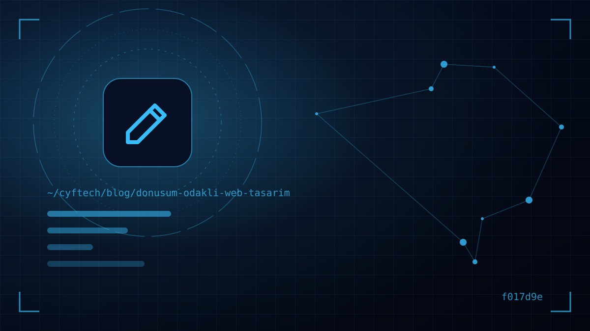

Jeden Monat kommen Hunderte Menschen auf Ihre Website, aber das Telefon klingelt nicht und niemand füllt das Formular aus? Meist liegt es nicht am Traffic, sondern am Design. Conversion-orientiertes Webdesign stellt in den Mittelpunkt, was der Besucher auf der Website tun soll, und richtet jedes Element auf diese Aktion aus.
Ästhetik ist wichtig; aber die Aufgabe einer Website ist nicht, zu gefallen, sondern Ergebnisse zu liefern. Angebotsanfrage, Kauf, Termin, Abonnement oder Anruf: Was immer für Sie wertvoll ist, danach sollte sich jede Designentscheidung richten.
In diesem Beitrag erklären wir, was eine Conversion ist und wie man sie misst, und stellen dann die Grundprinzipien vor, die auf UX-Forschung beruhen und die wir auch in unseren Projekten anwenden. Am Ende jedes Prinzips finden Sie konkrete Tipps, die Sie sofort auf Ihrer eigenen Website prüfen können.
Was ist eine Conversion und wie berechnet man die Conversion-Rate?
Eine Conversion ist eine für Sie wertvolle Aktion, die ein Besucher auf der Website abschließt. Die Conversion-Rate ergibt sich, wenn man die Zahl der Besucher mit dieser Aktion durch die Gesamtzahl der Besucher teilt. Eine Website mit 2.000 Besuchern und 40 Angebotsanfragen im Monat hat eine Conversion-Rate von 2 Prozent.
Es hilft, Conversions in zwei Arten zu unterteilen:
- Makro-Conversion: Das eigentliche Ziel. Kauf, Angebotsformular, Termin, Anruf.
- Mikro-Conversion: Schritte auf dem Weg zum Ziel. Katalog herunterladen, Newsletter abonnieren, Preisseite aufrufen, auf den WhatsApp-Button klicken.
Auf die Frage „Was ist eine gute Conversion-Rate?“ gibt es keine einheitliche Antwort; je nach Branche, Traffic-Quelle, Produktpreis und Zielaktion gibt es große Unterschiede. Der sinnvollste Vergleich ist der Wert Ihrer eigenen Website im Vormonat und Vorjahr. Erst messen, dann verbessern.
Erster Bildschirm: Beantworten Sie in Sekunden die Frage „Warum Sie?“
Der Bereich, den ein Besucher ohne Scrollen sieht, entscheidet darüber, ob er bleibt. Hier müssen drei Fragen klar beantwortet sein: Was machen Sie, für wen machen Sie es und was soll der Besucher jetzt tun?
- Nutzenorientierte Überschrift: Statt allgemeiner Slogans wie „Lösungen für die Zukunft“ ein konkretes Versprechen wie „Hausgeld zentral in einem Panel verwalten“.
- Unterstützende Unterzeile: Konkretisieren Sie das Versprechen in einem Satz: für wen, wie, in welcher Zeit.
- Ein einziger Haupt-Button: Der erste Schritt, den der Besucher gehen soll.
- Echte Bilder: Screenshots Ihres Produkts, Ihr Team oder Ihre Arbeit. Stockfotos wecken Misstrauen statt Vertrauen.
Call-to-Action-Design (CTA): ein Ziel, klarer Text
CTA-Buttons sind das Herz des conversion-orientierten Designs. Jede Seite sollte ein Hauptziel haben, und die visuelle Hierarchie der Seite sollte auf dieses Ziel hinweisen.
- Text, der mit einem Verb beginnt und das Ergebnis nennt: „Kostenloses Angebot anfordern“ statt „Senden“, „Demo-Termin vereinbaren“ statt „Klicken“.
- Kontrast: Der Haupt-Button sollte sich durch Farbe und Größe von den übrigen Elementen abheben. Sekundäre Aktionen sollten schlichter aussehen.
- Die richtige Position: Einmal auf dem ersten Bildschirm, auf langen Seiten erneut am Ende relevanter Abschnitte. Mobil im Bereich, den der Daumen erreicht.
- Wenige Optionen: Fünf verschiedene Buttons an einer Stelle halten den Besucher vom Entscheiden ab. Je weniger Optionen, desto leichter die Entscheidung.
Auch ein kurzer, beruhigender Hinweis direkt unter dem Button hilft, etwa „Kostenlos, wir melden uns innerhalb von 24 Stunden“ oder „Keine Kreditkarte nötig“.
Visuelle Hierarchie und scanbare Inhalte
Menschen lesen Webseiten nicht, sie scannen sie. Eye-Tracking-Studien der Nielsen Norman Group zeigen, dass Nutzer auf textlastigen Seiten weitgehend einem F-förmigen Lesemuster folgen und dass dieses Muster auf dem Desktop wie auch mobil gilt. Informationen außerhalb dieses Musters werden größtenteils übersehen. In Sprachen, die von rechts nach links gelesen werden, etwa im Arabischen, kehrt sich das Muster um.
So gestalten Sie passend zu diesem Verhalten:
- Beginnen Sie jeden Abschnitt mit einer aussagekräftigen Zwischenüberschrift; wer nur die Überschriften liest, sollte die Seite zusammengefasst bekommen.
- Halten Sie Absätze kurz, stellen Sie wichtige Informationen an den Satzanfang und setzen Sie Schlüsselbegriffe fett.
- Nutzen Sie statt langer Erklärungen Aufzählungen, Vergleichstabellen und Karten mit Icons.
- Haben Sie keine Angst vor Weißraum; eine überladene Seite wird nicht gelesen, egal wie viele Informationen sie enthält.
Muss der Besucher nachdenken, um das Gesuchte zu finden, erfüllt das Design seine Aufgabe nicht.
Formulardesign: Jedes Feld ist eine Hürde
Formulare sind der Ort der Conversion – und meist auch der Ort der größten Verluste. Die Checkout-Studie des Baymard Institute zeigt, dass ein durchschnittlicher Checkout standardmäßig 14,88 Formularfelder anzeigt, während ein idealer Ablauf mit 7–8 Feldern auskommt. Dasselbe Prinzip gilt für Angebots- und Kontaktformulare: Jede zusätzliche Frage ist ein Grund, das Formular abzubrechen.
- Fragen Sie nur das Nötige: Beim ersten Kontakt genügen meist Name, Telefon oder E-Mail und eine kurze Nachricht. Details klären Sie im Gespräch.
- Beschriftungen über das Feld setzen: Verlassen Sie sich nicht nur auf den blassen Platzhaltertext im Feld; er verschwindet, sobald man zu tippen beginnt.
- Die richtige Tastatur öffnen: Ziffernblock im Telefonfeld, Tastatur mit @-Zeichen im E-Mail-Feld – das macht mobil einen großen Unterschied.
- Fehler sofort und freundlich anzeigen: Eine Fehlermeldung, die nach dem Absenden alle Felder leert, vergrault den Besucher endgültig.
- Eine Danke-Seite nutzen: Sie erklärt dem Besucher, wie es weitergeht, und erleichtert die Messung der Conversion.
Vertrauenselemente und Social Proof
Kennt der Besucher Sie nicht, sucht er vor der Entscheidung nach Belegen. In derselben Baymard-Studie gibt etwa jeder fünfte Nutzer an, einen Kauf abgebrochen zu haben, weil er der Website seine Kartendaten nicht anvertrauen wollte. Vertrauen ist kein Schmuck des Designs, sondern Voraussetzung für die Conversion.
- Echte Referenzen: Kundenlogos, Bewertungen mit Name und Foto, Beispiele abgeschlossener Projekte.
- Konkrete Zahlen: Seit wie vielen Jahren sind Sie tätig, wie viele Projekte haben Sie abgeschlossen? Nennen Sie überprüfbare Angaben.
- Transparente Kontaktdaten: Vollständige Adresse, Festnetznummer, Karte und Öffnungszeiten.
- Technische Vertrauenssignale: HTTPS, ein zeitgemäßes Design und fehlerfrei funktionierende Seiten. Schon ein defekter Link erschüttert das Vertrauen.
Verstecken Sie Referenzen nicht auf einer separaten Seite, sondern platzieren Sie sie nahe am Entscheidungsmoment: Eine Kundenbewertung neben dem Preis oder dem Angebots-Button wirkt viel stärker als ein Logo ganz unten auf der „Über uns“-Seite.
Reibung reduzieren: kleine Hürden, die Besucher ermüden
Was die Conversion zerstört, ist meist kein einzelner großer Fehler, sondern viele kleine Hürden, die sich summieren. Ein Blick auf die Abbruchgründe in Baymards Liste macht das deutlich: unerwartete Zusatzkosten, Registrierungszwang, lange und komplizierte Abläufe, Website-Fehler. Keiner davon liegt außerhalb der Kontrolle des Designteams.
- Schlichtes Menü: Fünf bis sieben Punkte im Hauptmenü genügen für die meisten Websites. Verwenden Sie in Menüpunkten nicht internen Jargon, sondern die Begriffe, nach denen Kunden suchen.
- Rücksichtsvolle Pop-ups: Newsletter-Fenster, die sofort beim Öffnen den Bildschirm verdecken, vertreiben Besucher, bevor sie den Inhalt sehen. Wenn nötig, zeigen Sie sie gegen Ende der Seite und leicht schließbar an.
- Transparente Preise und Bedingungen: Zeigen Sie Versand-, Installations- oder Zusatzkosten von Anfang an, nicht erst im letzten Schritt. Überraschende Kosten sind der häufigste Abbruchgrund.
- Keinen Registrierungszwang: Bieten Sie im Onlineshop einen Gastkauf an; schlagen Sie die Registrierung nach dem Kauf vor.
- Alternative Kontaktwege: Für Besucher, die kein Formular ausfüllen möchten, sollten Telefon und WhatsApp sichtbar sein.
Spielen Sie auf Ihrer eigenen Website einen kompletten Vorgang als Kunde durch: Produkt wählen, Formular ausfüllen, am Handy testen. Jede Stelle, an der Sie auch nur eine Sekunde zögern, kostet Sie einen Teil Ihrer Besucher.
Geschwindigkeit und mobile Nutzung: der unsichtbare Conversion-Killer
Eine langsam ladende Seite gibt dem Besucher nicht einmal die Chance, Ihr Design zu sehen. Google misst die Seitenerfahrung mit drei Metriken, den Core Web Vitals, und empfiehlt auf web.dev für eine gute Nutzererfahrung diese Schwellenwerte:
| Metrik | Was wird gemessen? | Als gut geltender Wert |
|---|---|---|
| LCP (Largest Contentful Paint) | Ladezeit des Hauptinhalts | 2,5 Sekunden oder weniger |
| INP (Interaction to Next Paint) | Reaktionsgeschwindigkeit auf Klicks | 200 Millisekunden oder weniger |
| CLS (Cumulative Layout Shift) | Verschieben von Elementen während des Ladens | 0,1 oder weniger |
Das sind nicht nur SEO-Metriken; sie beeinflussen direkt die Conversion. Eine Seite, die sich verschiebt, wenn man gerade den Button drücken will, oder ein Formular, das nicht reagiert, reicht aus, damit der Besucher aufgibt. Die Details zur Geschwindigkeitsoptimierung haben wir in unserem Beitrag über Website-Geschwindigkeit und Core Web Vitals ausführlich erklärt.
Mobil sollte die Telefonnummer außerdem mit einem Fingertipp anrufbar sein, Buttons sollten groß genug für den Finger sein und Pop-ups dürfen den Bildschirm nicht verdecken.
Messung und A/B-Tests: Daten statt Vermutungen
Conversion-orientiertes Design ist keine einmalige Aufgabe, sondern ein fortlaufender Kreislauf. Lassen Sie statt Diskussionen à la „Ich finde diese Farbe besser“ die Daten sprechen.
- Schritt 1 — Ziele definieren: Markieren Sie in Google Analytics 4 Formularversand, Telefonklicks und WhatsApp-Klicks als wichtige Ereignisse.
- Schritt 2 — Das Leck finden: Prüfen Sie, auf welcher Seite die meisten Besucher abspringen und bei welchem Formularfeld sie aufgeben.
- Schritt 3 — Verhalten beobachten: Heatmaps und Sitzungsaufzeichnungen zeigen, wohin Besucher klicken und wo sie hängen bleiben.
- Schritt 4 — Eine Variable testen: Vergleichen Sie Überschrift, Button-Text oder Formularlänge per A/B-Test. Ändern Sie alles gleichzeitig, wissen Sie nicht, was gewirkt hat.
- Schritt 5 — Auf genügend Daten warten: Auf Websites mit wenig Traffic sind Ergebnisse weniger Tage irreführend; entscheiden Sie auf Basis einer aussagekräftigen Stichprobe.
Eine spezielle Anwendung dieser Prinzipien für Seiten mit Werbe-Traffic finden Sie in unserem Landingpage-Leitfaden.
- Hat jede Seite ein einziges Hauptziel?
- Sagt der erste Bildschirm, was Sie tun und wen Sie ansprechen?
- Nennt der Text des Haupt-Buttons das Ergebnis?
- Enthält das Formular nur wirklich notwendige Felder?
- Stehen Referenzen und Bewertungen nahe am Entscheidungsmoment?
- Liegen LCP, INP und CLS im guten Bereich?
- Werden Formular- und Telefonklicks in der Analyse gemessen?
Häufig gestellte Fragen
Was ist conversion-orientiertes Webdesign?
Ein Designansatz, der es Besuchern erleichtern soll, eine bestimmte Aktion auf der Website abzuschließen, etwa ein Angebot anzufragen, zu kaufen oder anzurufen. Seitenaufbau, Texte, Buttons, Formulare und Geschwindigkeit werden auf dieses Ziel ausgerichtet, und die Ergebnisse werden gemessen und laufend verbessert.
Was ist eine gute Conversion-Rate?
Einen universell richtigen Wert gibt es nicht. Je nach Branche, Produktpreis, Traffic-Quelle und Zielaktion unterscheiden sich die Raten stark. Der sinnvollste Vergleich ist die Leistung Ihrer eigenen Website in früheren Zeiträumen.
Wie erhöhe ich die Conversion-Rate meiner Website?
Messen Sie zuerst Ihre Ziele in der Analyse. Schärfen Sie dann den ersten Bildschirm, nutzen Sie einen einzigen, klaren Call-to-Action, kürzen Sie Formulare, machen Sie Vertrauenselemente sichtbar und verbessern Sie die Ladezeit. Testen Sie Änderungen einzeln, um zu sehen, was wirkt.
Wie hängen UX und Conversion-Rate zusammen?
Die Nutzererfahrung bestimmt, wie leicht Besucher finden, was sie suchen, und wie mühelos sie einen Vorgang abschließen. Verwirrende Menüs, lange Formulare und langsame Seiten erzeugen Reibung; je weniger Reibung, desto höher in der Regel die Conversion.
Sind A/B-Tests für kleine Websites sinnvoll?
Bei wenig Traffic dauert es lange, statistisch signifikante Ergebnisse zu erhalten. Dann ist es effizienter, zuerst bewährte Best Practices umzusetzen und Probleme über Nutzerinterviews und Sitzungsaufzeichnungen zu finden; A/B-Tests können Sie einsetzen, sobald der Traffic wächst.
Fazit
Conversion-orientiertes Webdesign beginnt mit einem klaren ersten Bildschirm, Calls-to-Action mit einem einzigen Ziel, kurzen Formularen, sichtbaren Vertrauenselementen und schnellen Seiten – und reift durch Messen und Testen. Der Unterschied zwischen einer schönen Website und einer, die Aufträge bringt, liegt oft in diesen kleinen, aber bewussten Entscheidungen.
Möchten Sie gemeinsam prüfen, wo Ihre Website Besucher verliert, oder Ihre neue Website von Anfang an conversion-orientiert planen, dann schreiben Sie uns. Details zu unseren Design- und Entwicklungsleistungen finden Sie auf unserer Seite Weblösungen.